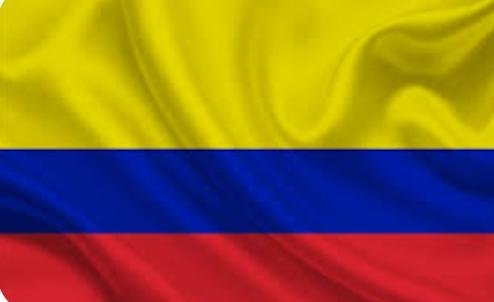
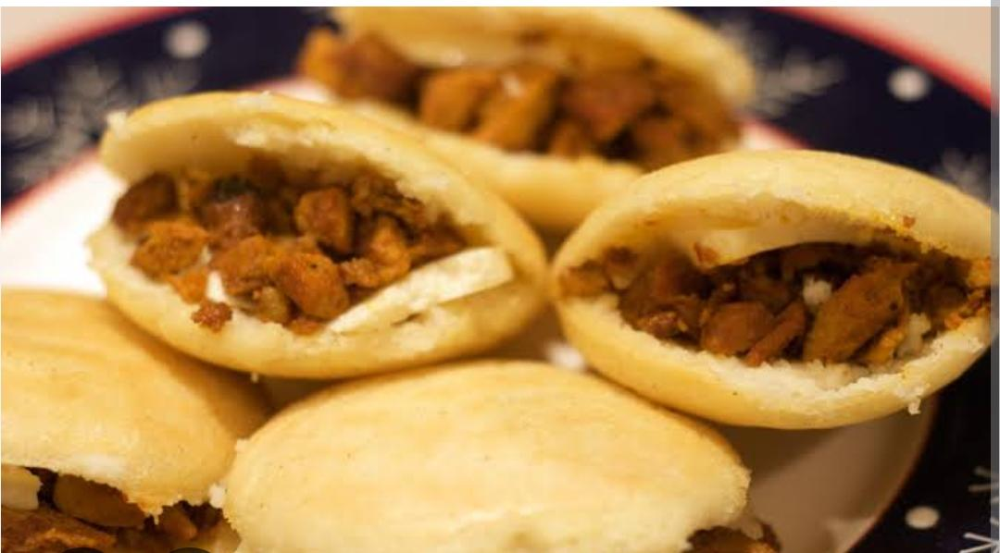
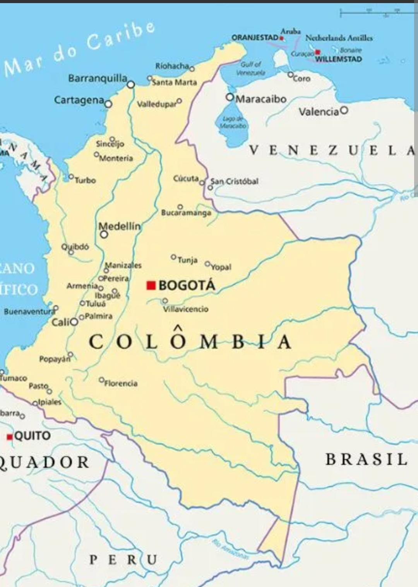
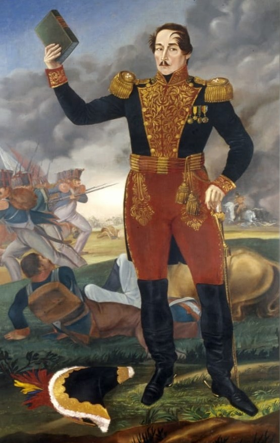
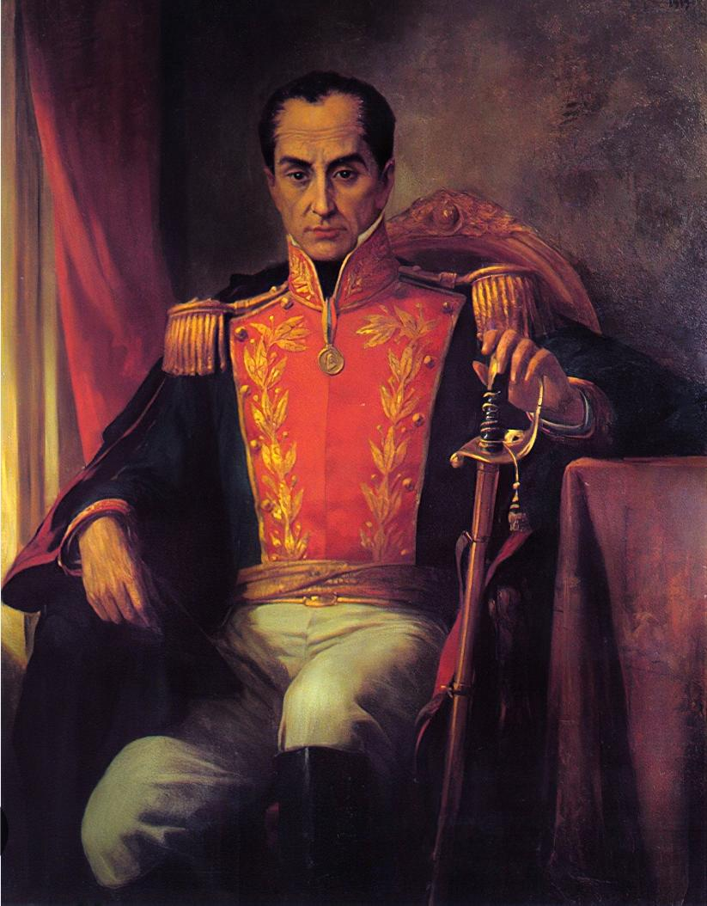
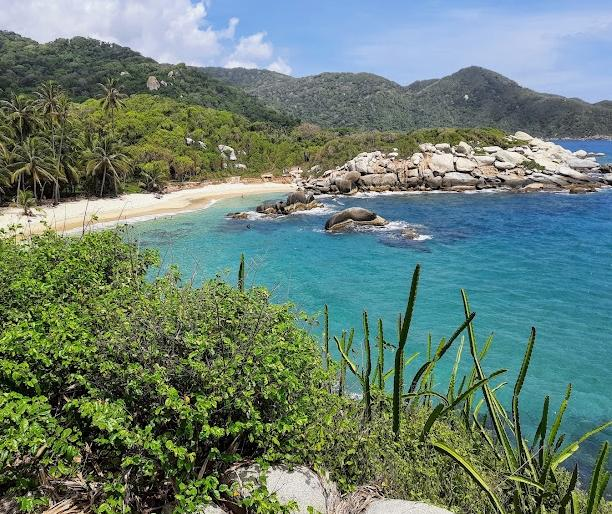
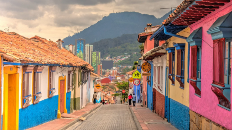
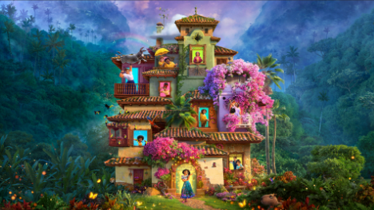

Os trajes típicos da Colômbia variam por região, refletindo influências indígenas, africanas e europeias. No Andes, roupas coloridas com saias rodadas e chapéus tradicionais. Na costa Caribe, roupas leves e vibrantes. No Pacífico, roupas frescas e coloridas influenciadas pela cultura afro. Nos Llanos, estilo de vaqueiro com chapéus e botas. Esses trajes são usados em festas e celebrações culturais.
A bandeira da Colômbia possui três faixas horizontais. A faixa superior é amarela e ocupa metade da bandeira. As faixas azul e vermelha ocupam a outra metade em partes iguais. O amarelo representa a riqueza e os recursos naturais do país. O azul simboliza os mares, rios e o céu colombiano. O vermelho lembra o sangue derramado na luta pela independência. A bandeira foi adotada oficialmente em 1861. Ela tem origem na bandeira da Grã-Colômbia, antiga união de países.
As comidas típicas da Colômbia variam por região, mas algumas famosas são: Bandeja Paisa: prato cheio com arroz, feijão, carne, ovo, banana e mais. Arepas: pão de milho, simples ou recheado. Ajiaco: sopa de batata, frango e milho. Sancocho: cozido de carne com mandioca e legumes. Empanadas: pastéis fritos recheados. Ceviche: peixe ou camarão marinado, comum na costa.
A Colômbia fica no noroeste da América do Sul. É o único país da região com acesso aos oceanos Atlântico e Pacífico. Faz fronteira com Panamá, Venezuela, Brasil, Peru e Equador. Seu território tem cordilheiras, planícies, florestas e litoral. A Cordilheira dos Andes atravessa o país, afetando o clima. A capital é Bogotá, localizada em uma área de altitude. A Colômbia possui grande biodiversidade e ecossistemas variados. Sua cultura é rica, vibrante e marcada por influências diversas.
A independência da Colômbia contou com importantes figuras históricas. Simón Bolívar destacou-se como líder militar e político do processo libertador. Francisco de Paula Santander teve papel fundamental na organização das forças patriotas. Policarpa Salavarrieta, conhecida como “La Pola”, atuou como corajosa espiã contra os espanhóis. Já Antonio Nariño e Camilo Torres contribuíram com ideias iluministas e lideranças estratégicas no movimento pela liberdade.
Independência da Colômbia: A independência da Colômbia foi um processo complexo. A data simbólica da declaração de independência é 20 de julho de 1810. No entanto, a independência completa foi alcançada após a Batalha de Boyacá em 7 de agosto de 1819, e a República da Colômbia (Grã-Colômbia) foi estabelecida nesse ano. Papel de Simón Bolívar: Simón Bolívar foi fundamental na luta pela libertação de vários países sul-americanos, incluindo a Colômbia, do domínio espanhol. Ele se tornou o primeiro presidente da República da Colômbia.
Os maiores famosos da Colômbia incluem ícones da música como Shakira, J Balvin, Maluma e Karol G, além de atletas como o jogador de futebol James Rodríguez e lendas do futebol como Carlos Valderrama. No campo da literatura, o destaque é o premiado escritor Gabriel García Márquez.
A Colômbia é conhecida por sua exuberante e diversificada beleza natural, que inclui desde praias caribenhas paradisíacas e a Floresta Amazônica até os picos da Cordilheira dos Andes. O país é o segundo com maior biodiversidade do mundo, com paisagens que variam entre florestas tropicais úmidas e secas, montanhas, planícies e desertos. É um destino ideal para ecoturismo, com uma riqueza impressionante de espécies de plantas e animais.
A capital da Colômbia é Bogotá. Ela fica localizada no centro do país, em uma região montanhosa dos Andes, a mais de 2.600 metros de altitude, o que lhe dá um clima ameno o ano todo. É a maior cidade colombiana e o principal centro político, econômico e cultural do país. Bogotá também abriga importantes universidades, museus como o Museu do Ouro, além de uma arquitetura que mistura construções históricas e modernas.
O filme “Encanto” da Disney se passa na Colômbia. A história se desenvolve em uma vila fictícia chamada “Encanto”, mas toda a cultura, roupas, comidas, músicas, paisagens e nomes dos personagens foram inspirados diretamente na Colômbia. Inclusive, as montanhas, as arepas, as borboletas amarelas e a trilha sonora têm muitas referências à cultura colombiana.